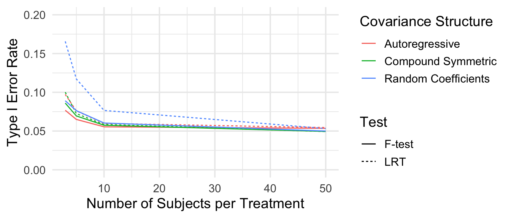
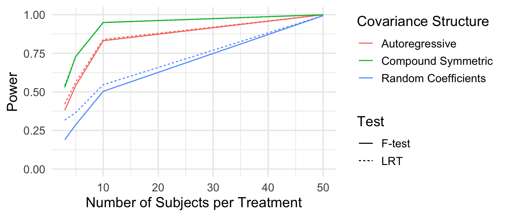

| n_subjects | LRT | REML | LRT | REML | LRT | REML |
|---|---|---|---|---|---|---|
| 3 | 0.097 | 0.077 | 0.100 | 0.086 | 0.166 | 0.089 |
| 5 | 0.076 | 0.065 | 0.072 | 0.070 | 0.117 | 0.076 |
| 10 | 0.060 | 0.056 | 0.058 | 0.058 | 0.077 | 0.060 |
| 50 | 0.054 | 0.054 | 0.049 | 0.050 | 0.053 | 0.050 |
Mini Project 2
Intro
Repeated-measures (or longitudinal) data often appears in experimental studies. This type of data is defined as data where multiple observations are collected from the same subject over time. Because responses within a subject are typically correlated, specifying an appropriate covariance structure is essential for valid inference. In this simulation study, we are interested in comparing the performance of the Likelihood Ratio Test (LRT) and the F-test in detecting differences in slopes between two treatment groups in longitudinal data. We evaluate the Type I error rates and power of both tests for small and large sample sizes under three different covariance structures: compound symmetric, random coefficients, and autoregressive. Our goal is to understand how the choice of covariance structure and estimation method affect the accuracy and power of tests for treatment effects.
In this simulation study, we will see that larger sample sizes and the use of REML lead to the most accurate Type I error rates across all covariance structures.
Data Generation
We consider three covariance structures for repeated measures on each subject:
\(\textbf{Compound Symmetric (CS)}\) Assumes constant variance and equal correlation among observations: \[ \operatorname{Var}(Y_{ij}) = \sigma^2, \quad \operatorname{Cov}(Y_{ij}, Y_{ik}) = \rho\sigma^2 \ (i \neq k) \]
\(\textbf{2. Random Coefficients (RC)}\) Allows random intercepts and slopes: \[ \Sigma = \begin{pmatrix} \sigma_0^2 & \sigma_{01} \\ \sigma_{01} & \sigma_1^2 \end{pmatrix}, \quad \operatorname{Cov}(Y_i) = Z_i \Sigma Z_i' + \sigma^2 I \] with \[ Z_i = \begin{pmatrix} 1 & t_{i1}\\ \vdots & \vdots\\ 1 & t_{in_i} \end{pmatrix} \]
\(\textbf{Autoregressive (AR(1))}\) Correlations decay exponentially with time lag: \[ \operatorname{Cov}(Y_{ij}, Y_{ik}) = \sigma^2\rho^{|t_{ij}-t_{ik}|} \]
We simulate two treatment groups measured at 5 equally spaced time points, modeled as: \[ Y_{ij} = \beta_0 + \beta_1(\text{time}_{ij} \times \text{treatment}_i) + \epsilon_{ij}, \] where \[ \boldsymbol{\epsilon}_i \sim N(\mathbf{0}, V), \] and (V) is one of the structures above.
To ensure comparable variability across structures, constants are chosen to yield approximately equal generalized variance ((18{,}570)):
\[ \begin{array}{lll} \text{CS:} & \sigma^2 = 10, & \rho = 0.5, \\ \text{RC:} & \sigma_b^2 = \sigma_c^2 = 1, & \sigma_\epsilon^2 = 4.3833424, \\ \text{AR(1):} & \sigma^2 = 10, & \phi = 0.584776. \end{array} \]
Methods
Each dataset was analyzed using models that corresponded to the true covariance structure:
Compound Symmetric: Fitted using the generalized least squares (GLS) model with compound symmetric correlation (corCompSymm) via nlme::gls().
Random Coefficients: Fitted using a linear mixed-effects model with random intercepts and slopes via lme4::lmer(): \(Y \sim 1 + \text{time} + \text{time:group} + (1 + \text{time} \mid \text{id})\)
Autoregressive: Fitted using GLS with an AR(1) correlation structure (corAR1) via nlme::gls().
For each fitted model, two tests for the treatment-by-time interaction were performed:
Likelihood Ratio Test (LRT): Comparing models with and without the interaction term, estimated using maximum likelihood (ML).
F-test: Based on approximate denominator degrees of freedom under restricted maximum likelihood (REML).
Across simulations, we computed:
Type I Error Rate: proportion of rejections when \(\beta_1 = 0\)
Power: proportion of rejections when \(\beta_1 = 1\)
Results
Type I Error
Our findings show that larger sample sizes and the use of REML lead to the most accurate Type I error rates across all covariance structures. The results of this simulation study are summarized in the tables and figures below.

As expected, we observe that as the number of subjects increases, the Type I error rates for both tests converge towards the nominal level of 0.05 across all covariance structures. The REML-based F-test generally performs better than the ML-based LRT, especially in smaller sample sizes. The difference between REML and LRT is almost negligible for sample size 10 and larger for the autoregressive and compound symetric structures, while the random coefficients structure shows a more pronounced difference even at larger sample sizes. Among the three tests, the random coefficients structure shows the highest type I error rates, followed by compound symmetric, and then autoregressive, which has the lowest type I error rates.
Power
Our findings show that larger sample sizes lead to increased power across all covariance structures and tests. The results of this simulation study are summarized in the tables and figures below.
| n_subjects | LRT | REML | LRT | REML | LRT | REML |
|---|---|---|---|---|---|---|
| 3 | 0.421 | 0.381 | 0.54 | 0.528 | 0.316 | 0.190 |
| 5 | 0.562 | 0.541 | 0.73 | 0.730 | 0.366 | 0.287 |
| 10 | 0.839 | 0.832 | 0.95 | 0.949 | 0.546 | 0.504 |
| 50 | 1.000 | 1.000 | 1.00 | 1.000 | 0.994 | 0.994 |

As expected, power increases with sample size for both tests across all covariance structures. The ML-based LRT consistently shows slightly higher power than the REML-based F-test, particularly in smaller sample sizes. The compound symetric model shows the highest power, followed by the autoregressive model, and then the random coefficients model, which has the lowest power. The difference in power is most pronounced in smaller sample sizes and becomes almost negligible after n = 10 subjects per treatment.
These findings suggest that random coefficients models may require larger sample sizes to achieve comparable power to the other covariance structures. In addition to this, REML estimation appears to be more conservative than LRT estimation, leading to slightly lower power but more accurate Type I error rates.
Conclusion
In this simulation study, we evaluated the performance of the Likelihood Ratio Test (LRT) and the REML-based F-test in detecting treatment-by-time interactions in longitudinal data under three different covariance structures: compound symmetric, random coefficients, and autoregressive. Our results indicate that larger sample sizes lead to more accurate Type I error rates and increased power for both tests across all covariance structures. The REML-based F-test generally outperformed the ML-based LRT in terms of Type I error control, particularly in smaller sample sizes. However, the LRT demonstrated slightly higher power, especially in smaller samples. Among the covariance structures, the random coefficients model exhibited the highest Type I error rates and lowest power, while the compound symmetric model showed the opposite trend. These findings highlight the importance of selecting appropriate estimation methods and covariance structures when analyzing longitudinal data to ensure valid inference regarding treatment effects.